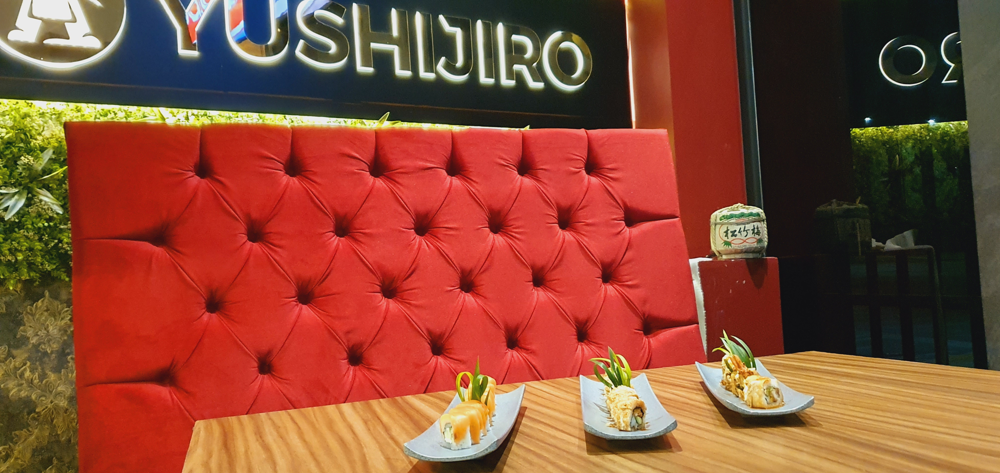
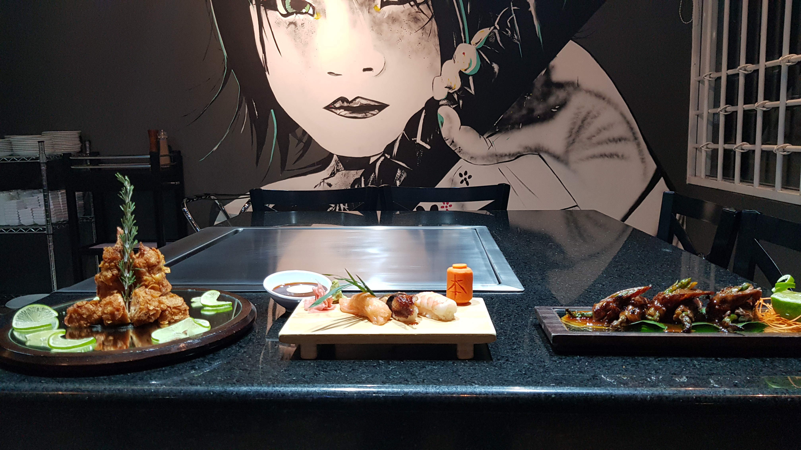
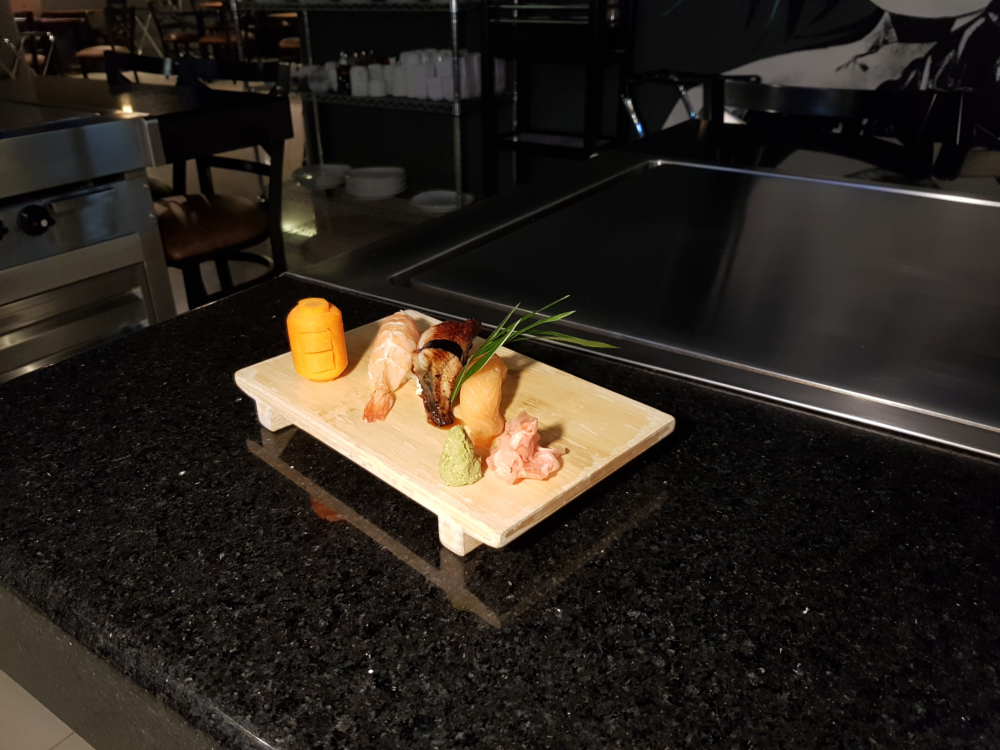

Frescura real
Ingredientes seleccionados todos los días para mantener sabor y textura en su punto.

Somos amantes de la cocina japonesa tradicional y moderna. Cada platillo es una muestra de dedicación, frescura y cultura.

Visítanos en cualquiera de nuestras sucursales y vive la experiencia completa, desde la ambientación hasta el último sorbo de sake.
Ver sucursalesNo solo es comida
En Yushijiro cada detalle está pensado para que tu noche tenga ritmo, sabor y memoria. Cocina viva, montaje limpio y un servicio que sabe leer tu mesa.
Ingredientes seleccionados todos los días para mantener sabor y textura en su punto.
Cada orden entra a un flujo preciso para que llegue bien presentada y a tiempo.
Un espacio pensado para citas, familia o celebraciones con una energía única.
Carta de la casa
En Yushijiro no buscamos impresionar por exceso, sino por precisión. Cada plato nace de una idea simple: respetar el ingrediente y llevarlo a su mejor versión.
El arroz en su punto, el corte limpio, la temperatura correcta y el tiempo exacto en pase. Cuando cada detalle se alinea, la experiencia cambia por completo.
Por eso cada visita se siente distinta pero siempre fiel a nuestra esencia: sabor profundo, técnica cuidadosa y una hospitalidad que se nota en cada mesa.
Yushijiro San
Una mirada que abre el apetito.




Sabor con carácter
Desde una cita especial hasta una comida improvisada entre semana, cada servicio está pensado para que la experiencia se sienta personal, cercana y memorable.
Cultura viva
Respetamos bases clásicas de técnica y producto, pero las llevamos a un lenguaje contemporáneo: limpio en presentación, contundente en sabor y coherente en cada detalle.
"El mejor ramen que he probado en la zona. Servicio rápido y amable."
"La calidad del sushi es excelente y el lugar está súper bonito."
"Pedí por WhatsApp y llegó todo fresco, bien empacado y en tiempo."
El ritual Yushijiro
Así entendemos una gran visita: que cada etapa tenga intención, ritmo y sabor.
Ambiente, mesa y recomendación inicial según tu plan del día.
Entradas con textura y balance para preparar el paladar.
Platos principales con técnica, punto y presentación impecable.
Postre, bebida o sake para terminar con una nota memorable.
Cuando se antoja Japón
Elige tu sucursal, revisa el menú oficial y reserva en segundos por WhatsApp.
Elegir sucursalSí. En cada sucursal tienes botón directo a WhatsApp para reservar o pedir a domicilio.
Sí, contamos con rollos y ramen vegetarianos. Pregunta por disponibilidad en tu sucursal.
Claro. Podemos apoyarte con reservación para grupos y paquetes especiales para celebraciones.
Selecciona una sucursal para ver su página con menú, mapa y contacto directo.
Escríbenos y te ayudamos con reservaciones, pedidos y eventos.
Atención por WhatsApp
Selecciona una opción y abrimos el chat directo con la sucursal.